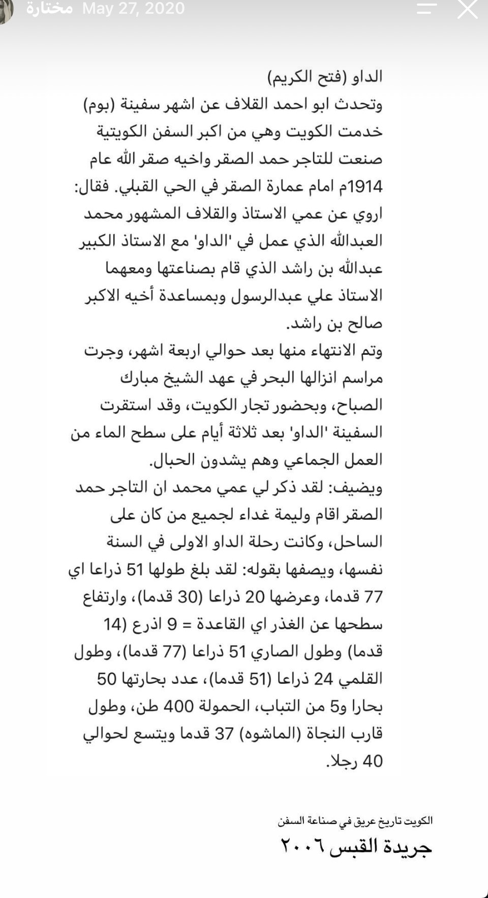
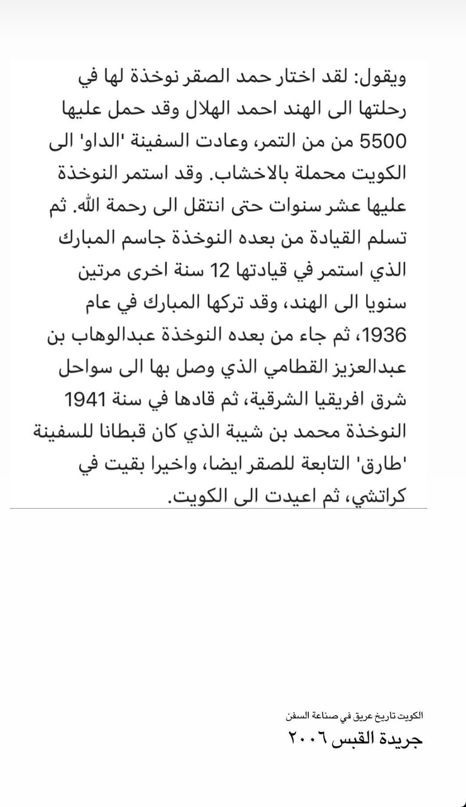

Al-Qabas, 2006, about the voyages of 1914 to 1941 · Newspaper series «Al-Kuwait: tarikh ‘ariq fi sina‘at al-sufun», Al-Qabas, 2006
Al-Dau (Fath Al-Karim): Abdulwahab bin Abdulaziz Al-Qatami takes her to East Africa
What it is
Abu Ahmed Al-Qallaf describes Al-Dau, one of the largest Kuwaiti booms, built in 1914 by Ostad Mohammed Abdullah bin Rashid for the merchant Hamad Al-Saqr and his brother Saqr Abdullah: about 77 feet keel, 400 tons. Her nakhudas were Ahmed Al-Hilal, then Jassim Al-Mubarak for 12 years, then from 1936 Abdulwahab bin Abdulaziz Al-Qatami, who took her to the coasts of East Africa, then in 1941 Mohammed bin Shaiba.
Why it matters
Dates Abdulwahab bin Abdulaziz’s command of Al-Dau from 1936.
Page copies


Others named
Hamad Al-SaqrAhmed Al-HilalJassim Al-MubarakMohammed bin Shaiba
Sources
Al-Qabas, 2006
How this text was made: The printed text, as shared.
Open in the interactive site